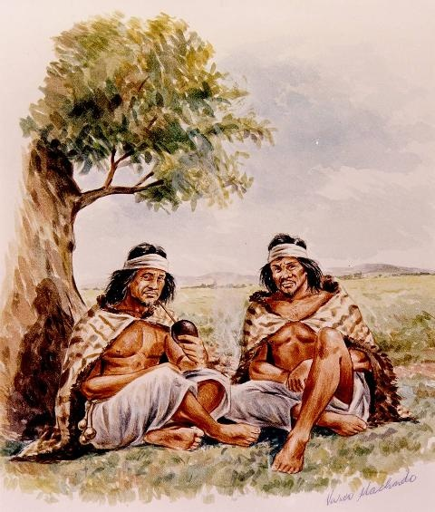
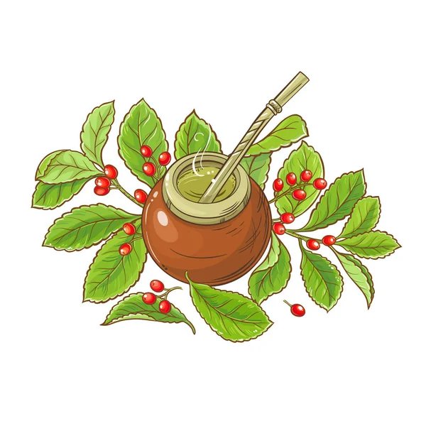

01
Origens Pré-Coloniais
Muito antes dos primeiros registros europeus em 1554, os povos originários já consumiam as folhas da planta para energia, nutrição e rituais sagrados de convivência.
Uma jornada sobre os saberes tradicionais dos povos Guarani, Kaingang e Xetá e sua contribuição para a identidade cultural e econômica do Paraná.
Preservação, Conhecimento e Ancestralidade
Este site apresenta a pesquisa sobre “Os povos indígenas e a erva-mate no Paraná”. O objetivo é evidenciar a profunda relação entre a planta (Ilex paraguariensis) e as populações originárias, abordando seus rituais, usos medicinais e a transmissão de conhecimentos ao longo de gerações.
Além disso, a investigação destaca como esses costumes influenciaram diretamente a formação econômica e a cultura do estado do Paraná a partir da colonização até os dias atuais.
A evolução da erva-mate no território paranaense
Muito antes dos primeiros registros europeus em 1554, os povos originários já consumiam as folhas da planta para energia, nutrição e rituais sagrados de convivência.
No século XIX, o comércio da erva impulsionou a infraestrutura do Paraná. Tropeiros realizavam o transporte até os portos de Paranaguá e Antonina para exportação.
A simbologia da erva-mate integra a bandeira, o brasão do Paraná e influenciou artistas do Movimento Paranista, consolidando-se no artesanato e na literatura local.
Registros artísticos e históricos do uso da erva-mate



Detalhes da pesquisa histórica e linguística
Partilhar o mate era visto pelos povos originários como um gesto de selar a paz, acolher visitantes e reunir a comunidade para decisões importantes.
Além da bebida diária, a planta era empregada pela medicina tradicional indígena devido a propriedades tônicas, estimulantes e digestivas.
Conhecer o papel dos povos originários na história do Paraná é fundamental para a construção de uma sociedade consciente e integrada.